Maynooth Furniture crafts solid-wood pieces in County Kildare, all to commission. Entering German and Scandinavian markets, they needed photography, editorial direction, and a digital presence that could sit beside established European craft brands.
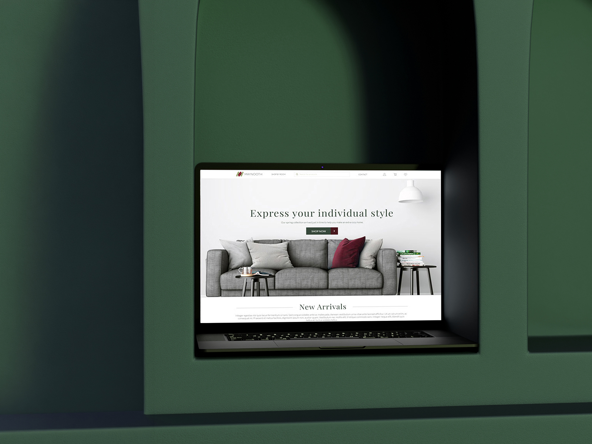
Maynooth Furniture — 01+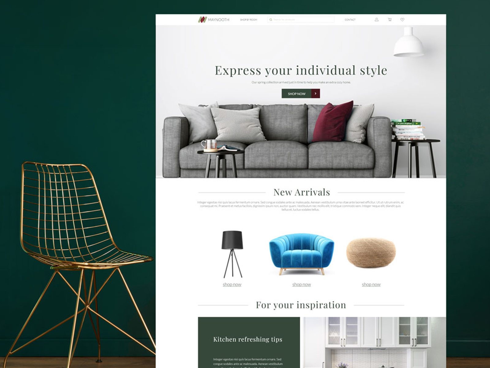
Maynooth Furniture — 02+Irish craft has international credibility problems — the market assumes it means folk-adjacent or heritage-nostalgic. Maynooth's work is neither. The art direction had to recontextualise the brand without erasing its origin.
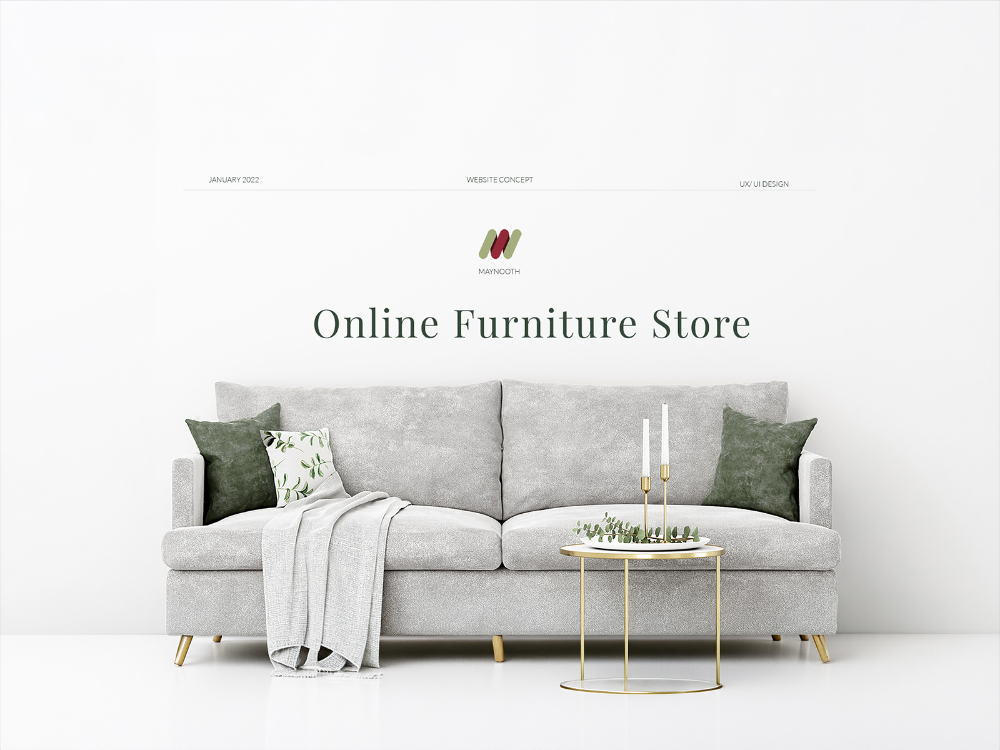
Maynooth Furniture — 03+We shot an eight-day campaign across three locations in Ireland and one in Berlin, pairing the furniture with contemporary interiors rather than traditional ones. No peat, no fields. The editorial language references Japanese and Scandinavian restraint while the copy foregrounds the specific materials and makers — every shot lit as a still life.
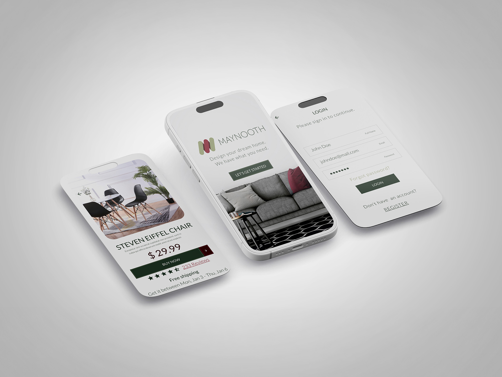
Maynooth Furniture — 04+ Maynooth Furniture — 05+
Maynooth Furniture — 05+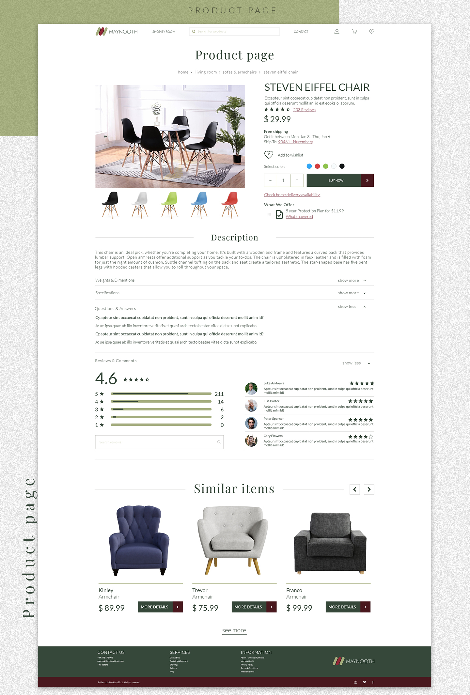
Maynooth Furniture — 06+Every element earns its place structurally before it's allowed to be decorative.
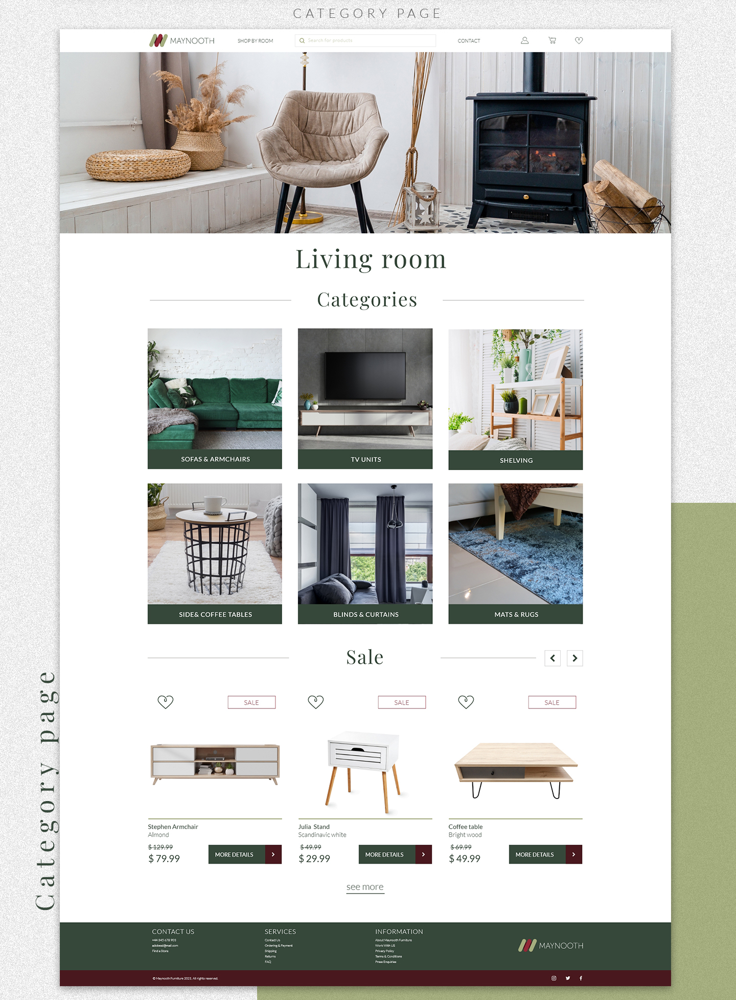
Maynooth Furniture — 07+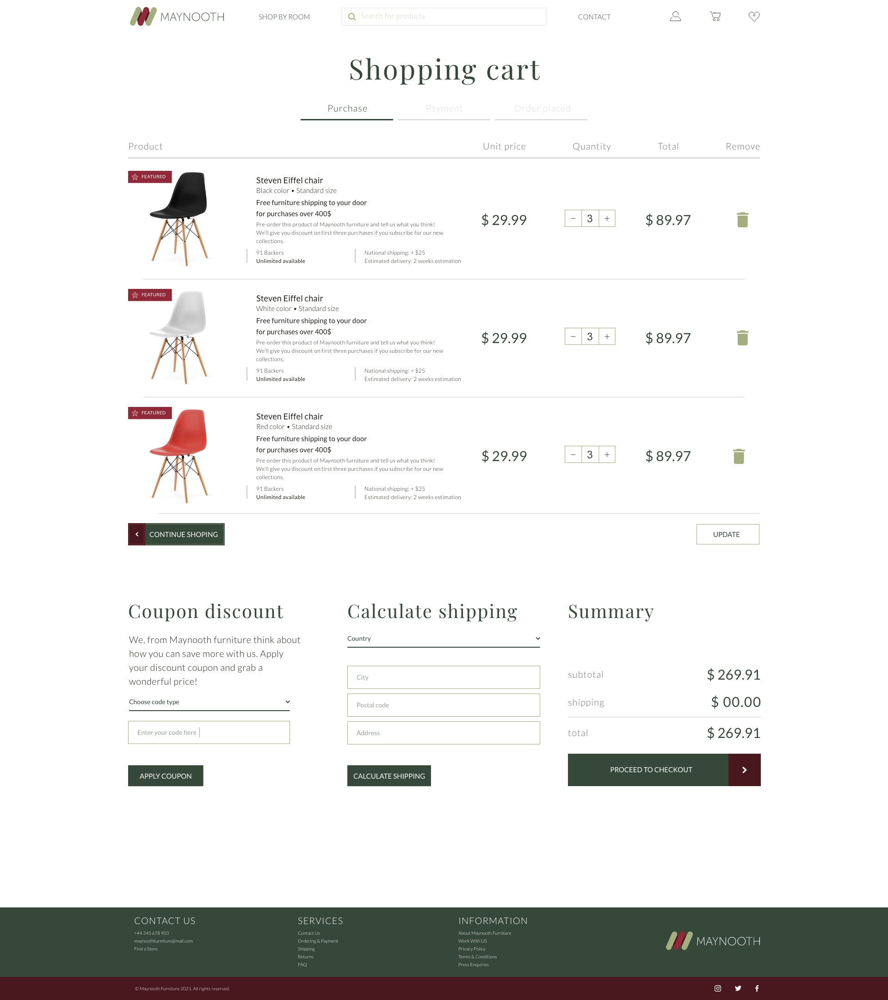
Maynooth Furniture — 08+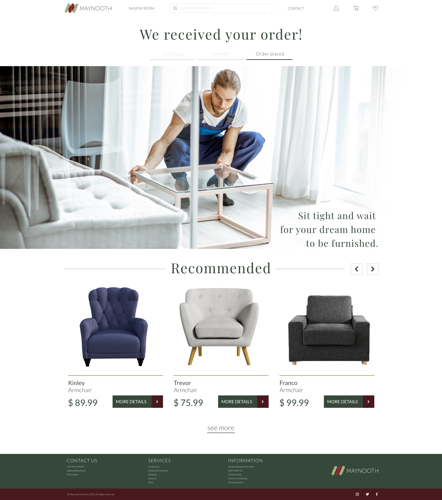
Maynooth Furniture — 09+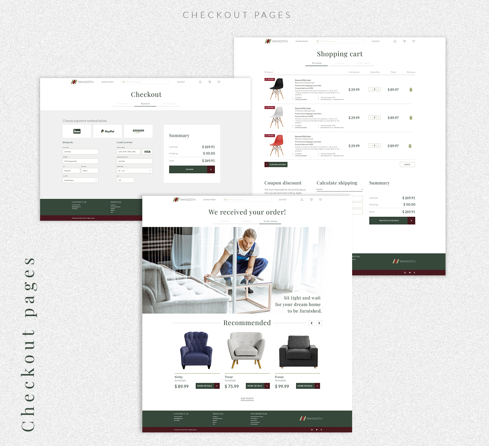
Maynooth Furniture — 10+The photography needed a frame that wouldn't compete with it, so the Webflow build stays quiet on purpose — a gallery-first layout with generous whitespace, a grid you can see the logic of, and nothing decorative that isn't also load-bearing. It holds up the same way at desk size and in the hand.
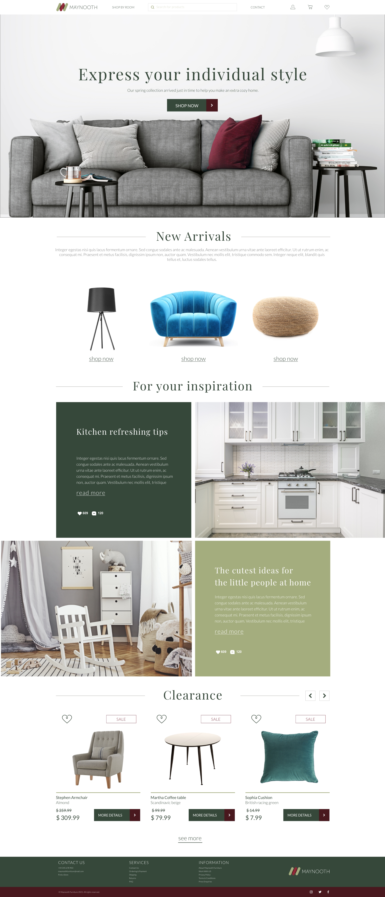

The new site launched with a 40% increase in enquiry-to-commission conversion. Two pieces were acquired for a Berlin showroom within six weeks of launch, and the campaign was cited in three interior design publications as a reference for craft brand positioning.
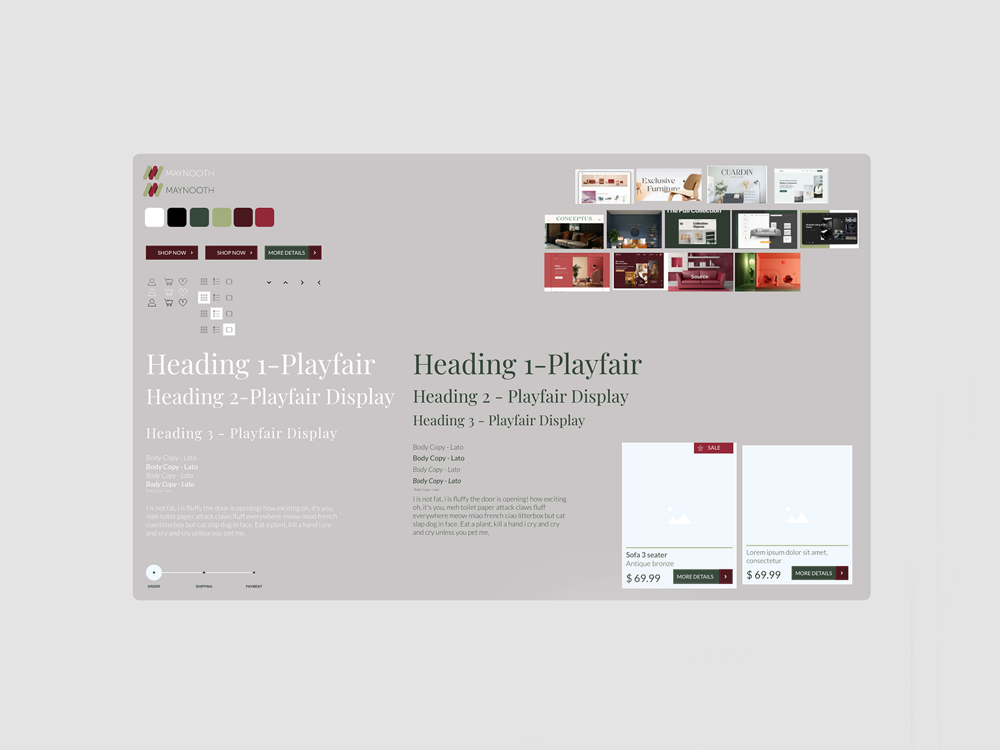
Maynooth Furniture — 11+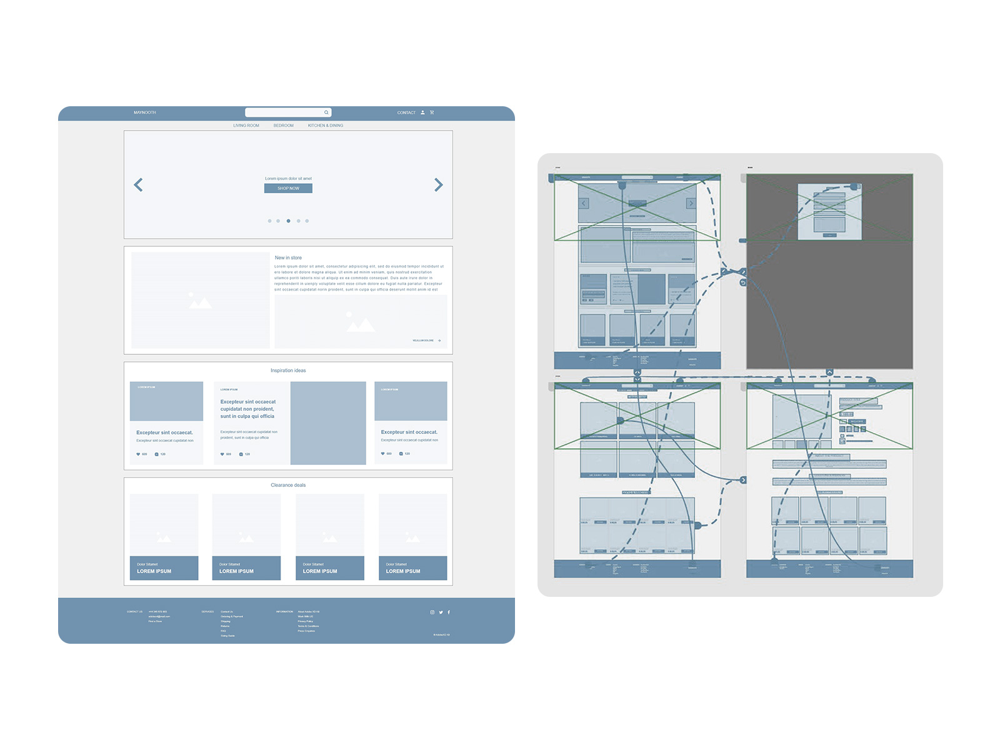
Maynooth Furniture — 12+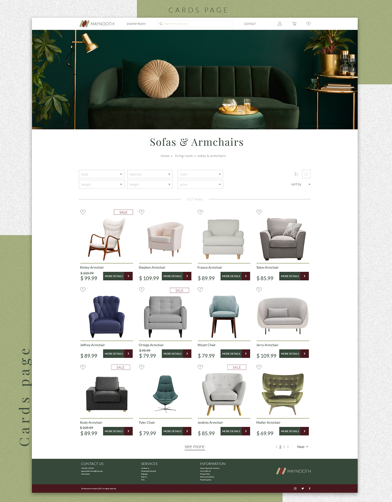
Maynooth Furniture — 13+The Berlin shoot was the turning point. Seeing Maynooth pieces in a contemporary Berlin apartment answered a question the brand had never been able to answer before: does this work outside Ireland? It clearly did.
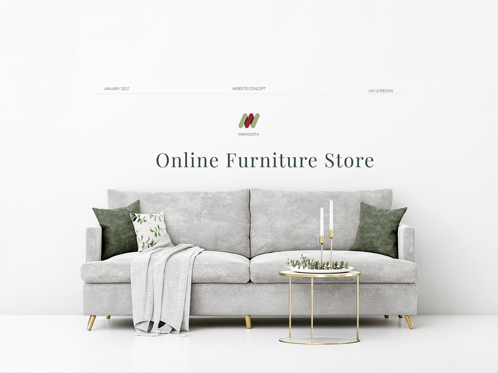
Maynooth Furniture — Final+